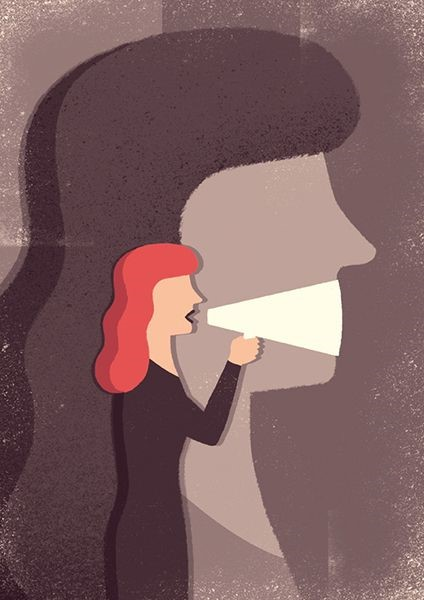

La construcción colectiva de un mundo más bonito.
En la primera parte de este artículo establecimos una escalada de efectividad para lograr equidad y bienestar en el planeta. Empezamos analizando cuándo sí y cuándo no hay que dar “el pescado”; luego revisamos el valor y los límites de las actividades que “enseñan a pescar”. Finalmente, estamos revisando cuáles son las barreras estructurales que se necesitan atender para que la persona que sabe pescar pueda alcanzar su bienestar.
Para empezar, hay que reconocer que muchas comunidades marginadas tuvieron condiciones de vida mejores en otras épocas, pero fueron despojados de sus tierras y normalmente de su libertad, algunos como esclavos; pero incluso fueron despojados de sus códices, su idioma, sus usos y costumbres, su economía, su sistema de gobernanza, y sus instituciones de salud, de comercio y demás. Las consecuencias a largo plazo de este despojo siguen vigentes hoy: la dificultad de acceder a una buena educación; estar en un ciclo económico, atados a estar pagando renta en lugar de estar generando un patrimonio; violencia, discriminación, etc.. Numerosas veces en la historia personas se han unido para buscar un cambio y una mejora en las condiciones en sus comunidades solo para encontrarse impedidos violentamente o a través de otras barreras estructurales.
El Salvador: es demasiado para escribir toda la historia aquí, pero El Salvador ha vivido olas de genocidio con el fin de mantener el control de todo el país por un poco más de una docena de familias. Cada intento de abrir y horizontalizar el sistema se topó con resistencia violenta generada desde ese sistema de poder y además apoyado por otros poderes en el extranjero también.
Y la historia es la misma en una larga lista de países. Las intervenciones militares para proteger los intereses han sido comunes en la historia. Solo en el siglo XX, Estados Unidos invadió directamente en Latinoamérica quince veces, además de centenares de acciones bélicas financiadas. No son solamente los intentos de cambio que son impedidos, sino también hay reglas y normas que, en sí mismas, impiden la posibilidad de que el cambio se busque: la tierra sigue repartida en una forma muy desigual. La disparidad económica -la brecha entre los que tienen mucho y los que no tienen casi nada- se ensancha cada vez más. Los “mercados” y la bolsa de acciones -ese enorme y amorfo conjunto de recursos económicos sin nombre ni cara- condicionan a gobiernos y pueblos enteros, permitiéndoles sobrevivir o condenándolos al exilio económico y comercial según sus intereses.
En este tema no hay que ser ingenuos. A la vez que celebremos los sucesos esperanzadores que van emergiendo, también hay que nombrar la injusticia por lo que es.
¿Qué hacer?
Históricamente hay un par de maneras en que las estructuras de injusticia y subyugación han cambiado. Recordaremos los movimientos, por ejemplo, de los derechos civiles en EUA, que a través de protestas, marchas, huelgas y otras formas de desobediencia civil lograron el fin de la segregación, el derecho a votar, reformas laborales, bloqueo de proyectos de devastación ambiental, entre otros cambios estructurales. Estas luchas de desobediencia civil y también armadas han tenido variados resultados: a veces con claro avance y progreso hacia reglas más justas en la sociedad; otras veces un sistema injusto es reemplazado por otro solamente con diferentes injusticias o una reorganización de las caras en el poder; otras veces resultan cambios estéticos dejando intactas otras estructuras no tan visibles pero que inciden más en la estructura del poder.
El famoso educador brasileño Paulo Freire trae una interesante sutileza a esta lucha por el cambio. En su libro Pedagogía de los Oprimidos explica que la liberación de los sistemas y de nuestra sociedad necesariamente tiene que surgir de abajo hacia arriba. El opresor -o el sistema opresor- no puede liberar al oprimido. Si lo pensamos, es lógico: el sistema de opresión es un sistema o jerarquía de poder de unos sobre otros; si los mismos que tienen el poder son los que “liberan” al que no lo tiene, por definición sigue siendo una acción de poder sobre otro (el poder de liberar al otro). También dice que, aun cuando los privilegiados con cierto poder en el sistema desean un sistema más equitativo y se solidarizan con los marginados, regularmente vuelve a salir nuestra inclinación de sentirnos con “la razón”, una especie de arrogancia oculta que no logramos ver.
Tengo amigas de color que insisten que la acción más importante que podemos tomar, en mi caso como hombre blanco, es dar un paso para atrás y dejar lugar a otras voces, otros liderazgos, otra forma de liderazgo que emerja. Y, como dicen, creo en la gran sabiduría de la sugerencia de que no pensemos en “este o el otro” sino en “esto y esto también”. La acción de tomar un paso para atrás no es una acción pasiva; al contrario, es una acción de profunda concientización de nosotros y nosotras misma/os. Al tomar la decisión con conciencia y compartir esta conciencia, nuestro pensar y sentir con nuestros semejantes, cambiamos el sistema. O, al menos, despejamos el camino y nos ponemos a servicio para que otras diseñen y construyan ese mundo más bonito que conocemos en nuestros corazones.